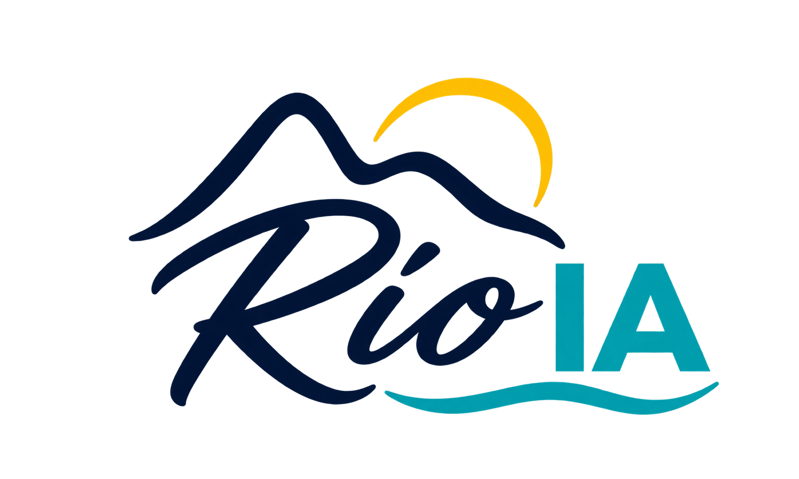
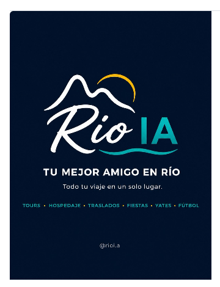

RIO
Full day01
Íconos de la ciudad
Un Día en Río
Cristo, Pan de Azúcar, Selarón, Catedral y Maracaná en una jornada inolvidable
Consultar
Armá tu viajeTours, hospedaje, traslados y experiencias privadas para vivir Río a su manera
Nos contás qué imagina el grupo y armamos un plan a medida: dónde quedarse, cómo moverse y qué hacer cada día
Conocer la propuesta para gruposCristo, Pan de Azúcar, Selarón, Catedral y Maracaná en una jornada inolvidable
ConsultarRío desde el agua, con la ciudad encendiéndose frente al grupo
ConsultarParadas para nadar, snorkel y opciones de barra o asado a bordo
ConsultarSanta Teresa y Centro Histórico
Colombo, Parque Lage y el corazón bohemio de la ciudad
Favela da Rocinha
Recorrido cultural y social a pie con guías locales
Parque Nacional de Tijuca
Pedra da Gávea, Pico da Tijuca o Pedra do Telégrafo
Parapente o ala delta
Desde Pedra Bonita hasta la playa de São Conrado
Angra e Ilha Grande
Islas vírgenes en escuna o lancha rápida
Búzios o Petrópolis
Mar o montaña para completar el viaje
Fotografías provisorias de Raphael Nogueira, Jonathan Borba, Marcos Paulo Prado, Sacred Treks y Larissa Fraga · Unsplash y Wikimedia Commons
Ideal para despedidas de soltero/a, cumpleaños, viajes de amigos y equipos. Centralizamos todo para que nadie del grupo termine trabajando de organizador
Fechas, cantidad de personas, intereses y presupuesto estimado
Combinamos estadía, traslados y experiencias sin fórmulas rígidas
Llegan con todo organizado y apoyo local durante la estadía

Río IA nació para que viajeros de Uruguay y Argentina disfruten la ciudad con información clara, proveedores coordinados y alguien que conozca el terreno
Mathias MassoueCoordinación y experiencias
Rafael MoreiraOperaciones locales · nombre provisorio
Completá estos datos y preparamos una primera propuesta para el grupo